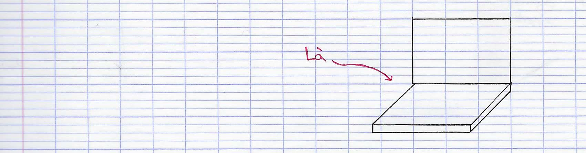
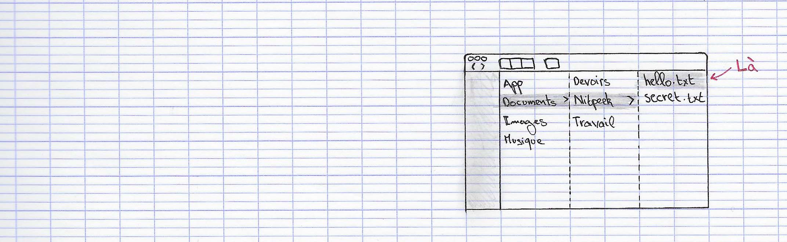
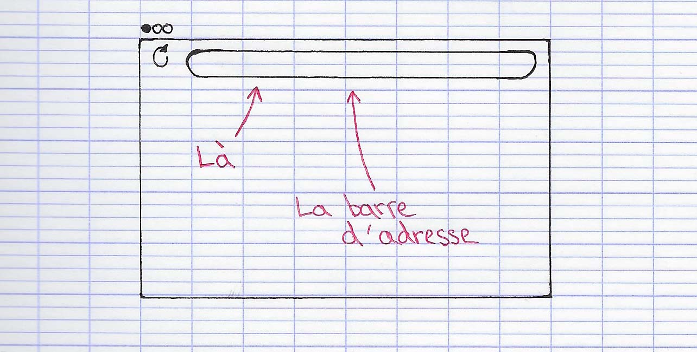
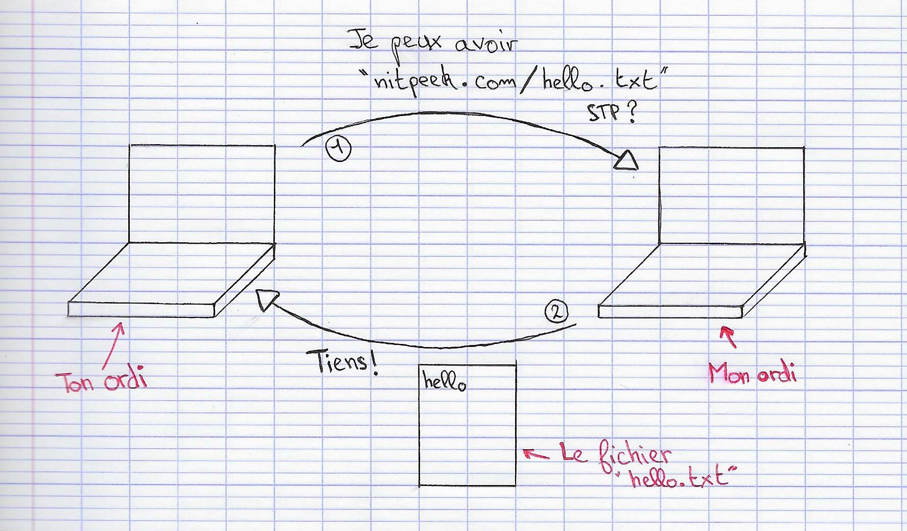

Internet c'est quoi ?
La moitié de la population mondiale utilise Internet, c'est à dire environ 4 milliards de personnes.
En France, presque 9 personnes sur 10 utilisent Internet. Et tu en fais partie, puisque cette page est sur Internet !
Internet est fait d'ordinateurs, comme le tien, connectés entre eux par des cables. Souvent la box est branchée au cable, et les ordinateurs se connectent à la box sans fil, par Wi-Fi. Le fonctionnement est le même que si ton ordinateur est directement branché au cable, mais c'est plus pratique.
Et un site Internet ça marche comment ?
Prenons le site nitpeek.com comme exemple. Ce site, c'est moi qui l'ai créé. Il est constitué de plusieurs fichiers que j'ai écrit. Tous ces fichiers sont sur mon ordinateur, connecté à Internet.
Il y a par exemple le fichier hello.txt, qui contient juste le mot "hello".
Ce fichier est accessible sur Internet, il suffit de le demander à mon ordinateur.
Mais comment je le trouve parmi tous les ordinateurs du monde ?
En fait, c'est très simple. Pour s'y retrouver sur Internet, comme dans la rue, on utilise des addresses. L'addresse de mon ordinateur, et bien c'est tout simplement nitpeek.com.
Pour demander un fichier, on rajoute son nom à la fin de l'addresse comme ça :
Et comment je demande le fichier hello.txt à l'ordinateur ?
Pour demander des fichiers sur Internet, on peut utiliser un navigateur, comme Google Chrome. D'ailleurs, c'est ce que tu as fait pour lire cette page.
On tape l'adresse du fichier dans la barre d'adresse du navigateur.
Essaie dans un nouvel onglet ! Tape l'adresse du fichier nitpeek.com/hello.txt.
Ton ordinateur trouve le mien grâce à l'adresse nitpeek.com, et lui demande le fichier hello.txt. Mon ordinateur répond en envoyant le fichier hello.txt.
Puis, ton ordinateur reçoit le fichier, et le navigateur l'affiche pour que tu puisses le lire.
Tu as tapé nitpeek.com/hello.txt et vérifié que tu voyais bien le fichier ?
Il y a un autre fichier à l'adresse nitpeek.com. Il s'appelle secret.txt et contient un mot secret.
Affiche le fichier dans ton navigateur et copie ce qui y est écrit.
Tape nitpeek.com/secret.txt dans la barre d'adresse pour voir le fichier secret.txt.
Quel est le mot secret contenu dans le fichier secret.txt ?
Bravo ! Si tu ne sait pas ce que ça veut dire, je te conseille de taper askew dans Google.
Et si on créait une nouvelle page Web ?
Une page sur Internet c'est donc un fichier sur un autre ordinateur, qui s'affiche dans ton navigateur. Ces pages forment des site Internet, et tous ces sites et pages forment le Web. Je suis sûr que tu as déjà entendu parler du Web.
Donc en fait le Web et Internet c'est pareil ?
Eh bien, non !
Internet c'est le réseau qui relie des centaines de millions d'appareils, comme les ordinateurs. Il permet aux ordinateurs de communiquer entre eux, pour s'envoyer des fichiers par exemple.
Le Web c'est l'ensemble des sites et des pages qu'on peut voir dans son navigateur. Les pages sont des fichiers sur des ordinateurs connectés à Internet. Donc le Web est sur Internet.
Internet c'est un peu comme la Poste. Et le Web c'est les magazines que tu reçois par la Poste. C'est vrai que sans la Poste tu ne pourrais pas les lire, mais c'est quand même assez différent. On peut recevoir plein d'autres choses que des magazines par la Poste, et on peut aussi en envoyer.
Mais il n'y a que le Web sur Internet ?
Encore non.
Les mails passent aussi par Internet. Les jeux multijoueurs, sur PC ou sur console aussi. Les applications iPhone ou Android aussi utilisent Internet en général. Si tu fais quelque chose sur ton ordinateur ou ton téléphone, et que quelqu'un d'autre peut le voir sur le sien, c'est passé par Internet.
Et donc on la fait cette page Web ?
Cette fois, oui !
J'ai créé un fichier pour toi sur mon ordinateur. Plus bas, tu vas trouver un petit éditeur de texte, pour écrire ce que tu veux, et sauvegarder le fichier sur mon ordinateur. Ensuite, tu pourras y accéder par Internet à l'adresse nitpeek.com (c'est l'adresse de mon ordinateur).
Ton fichier s'appelle mon-fichier.html.
.html ??? Pourquoi pas .txt ? C'est pas du texte ?
Si si ! C'est du texte. Sur le Web ou utilise plutôt des noms en .html que .txt. C'est quand même du texte à l'interieur, mais ça dit à ton navigateur que c'est du texte fait pour le Web.
Quand tu demandes un fichier .txt à ton navigateur, il ne sait pas vraiment pourquoi tu veux ce fichier. La plupart des navigateurs vont afficher le texte, mais certains vont plutôt le télécharger dans ton dossier Téléchargements.
Pour un fichier .html, le navigateur est sûr : c'est une page web, donc tu veux l'afficher.
Ne t'en fais pas, on reparlera longuement du .html. C'est la base du Web.
C'est parti ! Code ta première page Web
Saisi le texte que tu souhaites dans l'éditeur, et clique sur sauvegarder pour l'envoyer sur nitpeek.com.